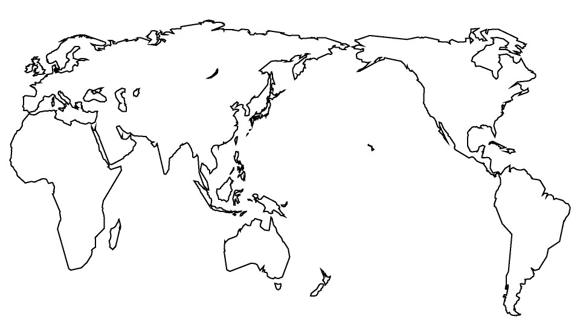
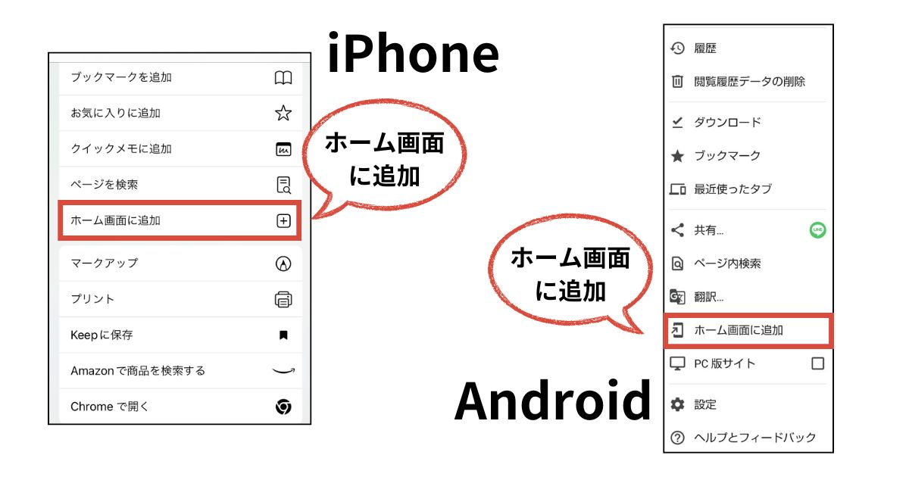

アジア
豪州
アフリカ
ヨーロッパ
北米
中南米
中東
はじめに
アプリ解説
インストール方法
PWAに対応しているので、iPhone、Androidともに、WEBブラウザの「ホーム画面に追加」からインストールできます。
更新ボタン
右上の更新ボタンを押すと、データ取得が更新されます。
全画面表示
左上の全画面表示ボタンを押すと、ヘッダー、フッターが無くなり、全画面表示に切り替わります。
アプリURL
https://overseastravel17.netlify.app/
二次元バーコード
使用したオープンデータ
外務省 海外安全情報オープンデータ 提供情報を加工・編集して作成